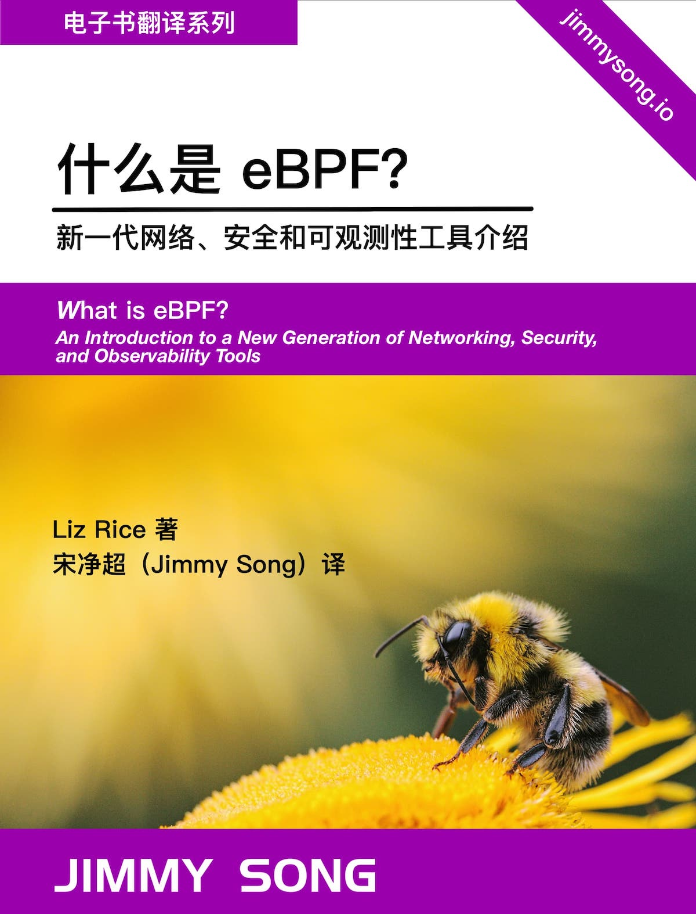

什么是 eBPF？
《什么是 eBPF —— 新一代网络、安全和可观测性工具介绍》译自 O’Reilly 发布的报告 “What is eBPF”，作者是 Liz Rice，由 JImmy Song 翻译，英文原版可以在 O’Reilly 网站上获取。

译者序
最近两年来关于 eBPF 的讨论在云原生社区里越来越多，尤其是当谈到 Cilium 的商业化，使用 eBPF 来优化 Istio 服务网格，甚至扬言干掉 Sidecar 时，eBPF 更是赚足了眼球。
这本报告是由基于 Cilium 的创业公司 Isovalent 的 Liz Rice 撰写，由 O’Reilly 发布，相信可以为你揭开 eBPF 技术的神秘面纱，带你了解什么是 eBPF 还有它的强大之处。更重要的是它在云原生环境中，在服务网格、可观测性和安全中的应用。
关于作者
Liz Rice 是云原生网络和安全专家，Isovalent 的首席开源官，是基于 eBPF 的 Cilium网络项目的创建者。她在 2019-2022 年担任 CNCF 的技术监督委员会（TOC）主席，并在 2018 年担任 KubeCon + CloudNativeCon 的联合主席。她也是 Container Security 一书的作者，由 O'Reilly 出版。她拥有丰富的软件开发、团队和产品管理经验，曾在网络协议和分布式系统以及数字技术领域（如 VOD、音乐和 VoIP）工作。在不写代码的时候，Liz 喜欢在天气比她的家乡伦敦好的地方骑自行车，和在 Zwift 上参加虚拟比赛。